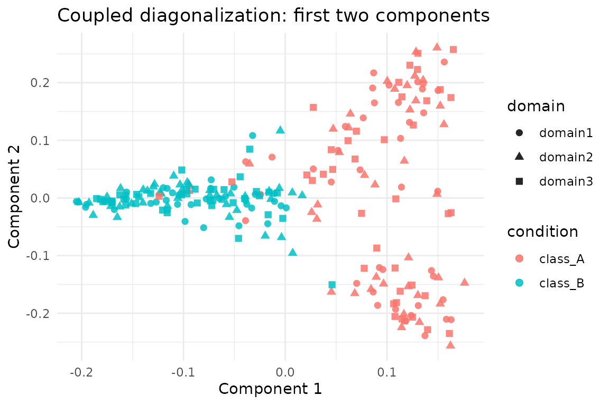

Coupled Diagonalization across Modalities
Source:vignettes/coupled-diagonalization.Rmd
coupled-diagonalization.RmdOverview
coupled_diagonalization() finds a shared basis for
several modalities by jointly optimising Laplacian diagonalisation and
cross-domain agreement. The routine is unsupervised; class labels appear
only in diagnostics below.
Loading the Benchmark Domains
bench <- manifoldalign::alignment_benchmark
multi_domains <- lapply(bench$domains, function(dom) {
multidesign::multidesign(dom$x, dom$design)
})
multi_names <- names(multi_domains)
node_counts <- vapply(multi_domains, function(dom) nrow(dom$x), integer(1))
hd_multi <- multidesign::hyperdesign(multi_domains)Running Coupled Diagonalization
cd_fit <- coupled_diagonalization(
hd_multi,
ncomp = 5,
ncomp_per_domain = 12,
mu_coupling = 1.5,
knn = 8,
verbose = FALSE
)
list(
converged = cd_fit$converged,
iterations = cd_fit$iterations,
final_cost = cd_fit$final_cost
)
#> $converged
#> [1] FALSE
#>
#> $iterations
#> [1] 200
#>
#> $final_cost
#> [1] 0.04915779Coupled Basis Diagnostics
We inspect the Frobenius norm of each coupled basis and pairwise Hilbert-Schmidt similarities to gauge alignment strength.
basis_norms <- purrr::imap_dfr(cd_fit$coupled_bases, function(Ai, name) {
tibble(domain = name, frobenius_norm = sqrt(sum(Ai^2)))
})
basis_similarity <- function(A, B) sqrt(sum((t(A) %*% B)^2))
pair_indices <- combn(names(cd_fit$coupled_bases), 2, simplify = FALSE)
similarity_tbl <- purrr::map_dfr(pair_indices, function(pair) {
tibble(
domain_i = pair[1],
domain_j = pair[2],
hs_similarity = basis_similarity(cd_fit$coupled_bases[[pair[1]]],
cd_fit$coupled_bases[[pair[2]]])
)
})
basis_norms
#> # A tibble: 3 × 2
#> domain frobenius_norm
#> <chr> <dbl>
#> 1 domain1 2.24
#> 2 domain2 2.24
#> 3 domain3 2.24
similarity_tbl
#> # A tibble: 3 × 3
#> domain_i domain_j hs_similarity
#> <chr> <chr> <dbl>
#> 1 domain1 domain2 2.08
#> 2 domain1 domain3 2.07
#> 3 domain2 domain3 2.01Visualising Coupled Components
score_tbl <- as_tibble(as.matrix(cd_fit$s), .name_repair = "minimal")
colnames(score_tbl) <- paste0("comp", seq_len(ncol(score_tbl)))
scores <- score_tbl %>%
mutate(
sample = seq_len(nrow(.)),
domain = rep(multi_names, times = node_counts),
condition = rep(bench$labels, length(multi_names))
)
ggplot(scores, aes(x = comp1, y = comp2, colour = condition, shape = domain)) +
geom_point(alpha = 0.85, size = 2) +
labs(title = "Coupled diagonalization: first two components",
x = "Component 1", y = "Component 2") +
theme_minimal()
Summary
-
coupled_diagonalization()produces orthogonal bases that align the domains’ eigenvectors. - Basis norms and Hilbert–Schmidt similarities (see above) quantify the quality of the joint diagonalisation.
- Because all vignettes reuse
alignment_benchmark, you can compare coupled diagonalisation directly against graph-, kernel-, and OT-based approaches.